Projects
 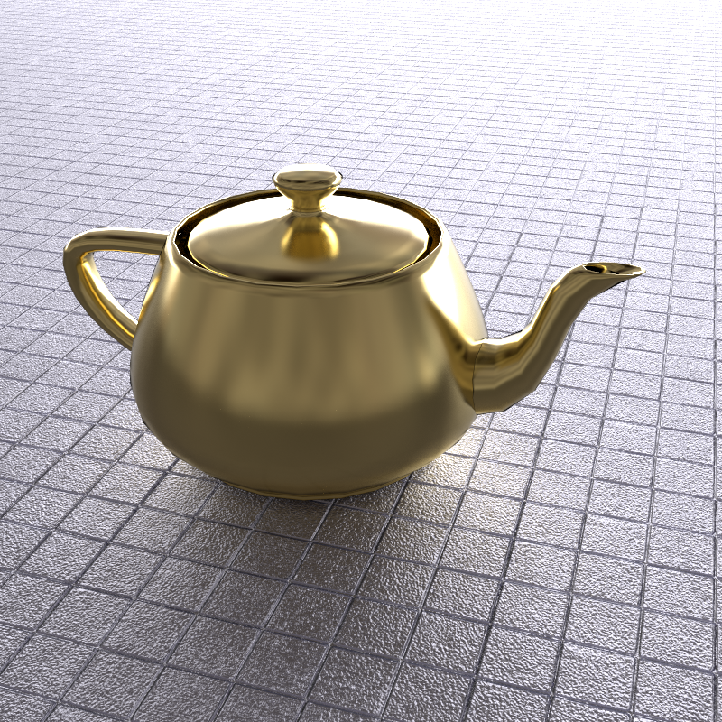
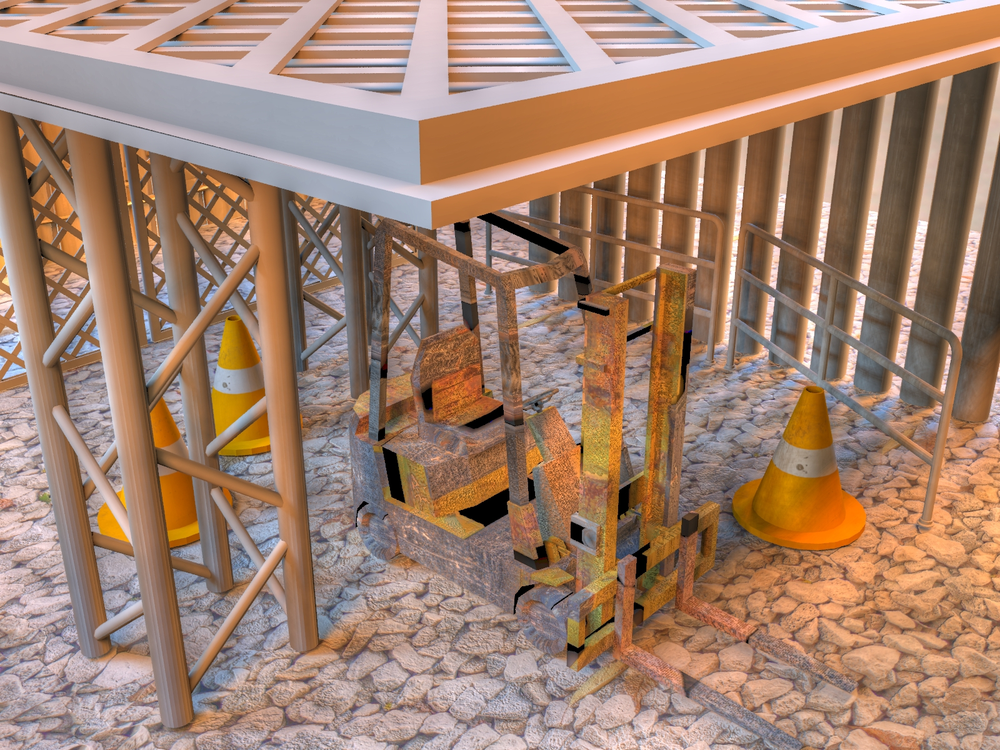
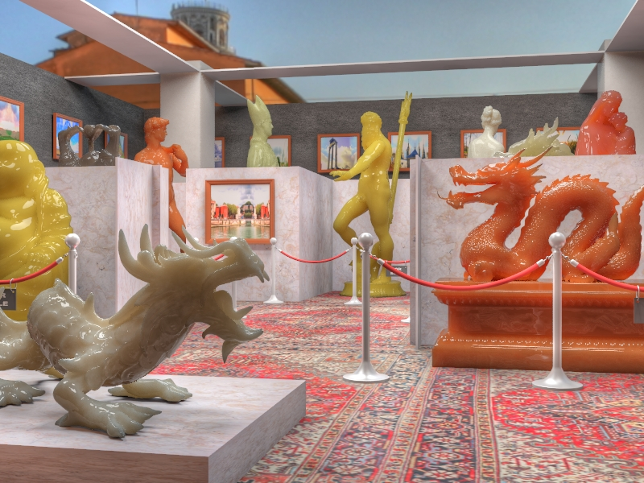
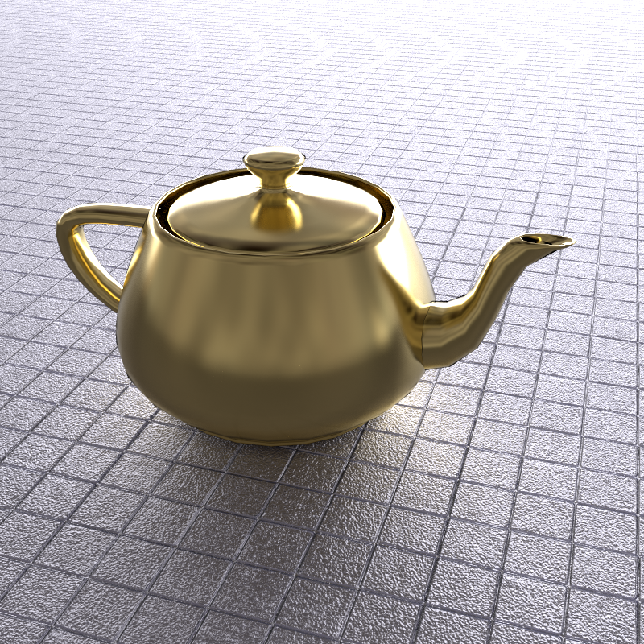
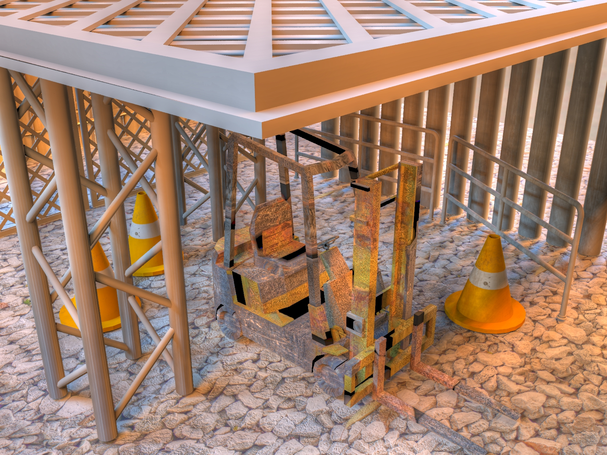
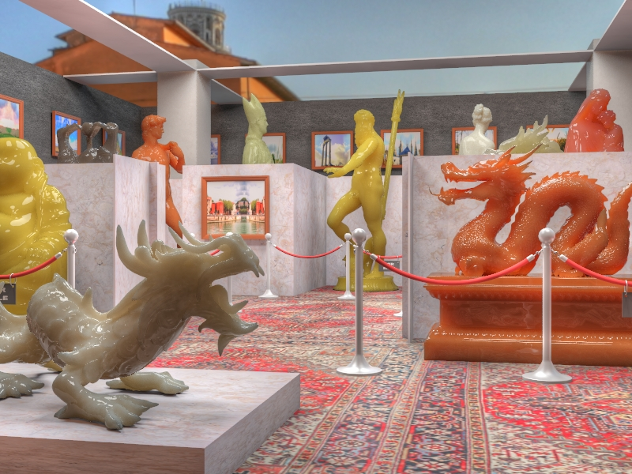
Physically-based Rendering
Related works:
- Learning to Cluster for Rendering with Many Lights, ACM SIGGRAPH Asia 2021
- Dual-Matrix Sampling for Scalable Translucent Material Rendering, IEEE TVCG 2015
- VisibilityCluster: Average Directional Visibility for Many-Light Rendering, IEEE TVCG 2013
- SURE-based Optimization for Adaptive Sampling and Reconstruction, ACM SIGGRAPH Asia 2012
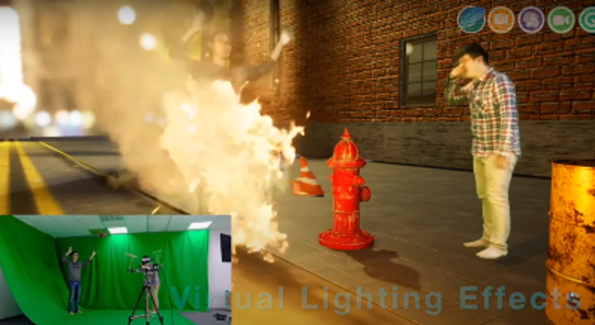
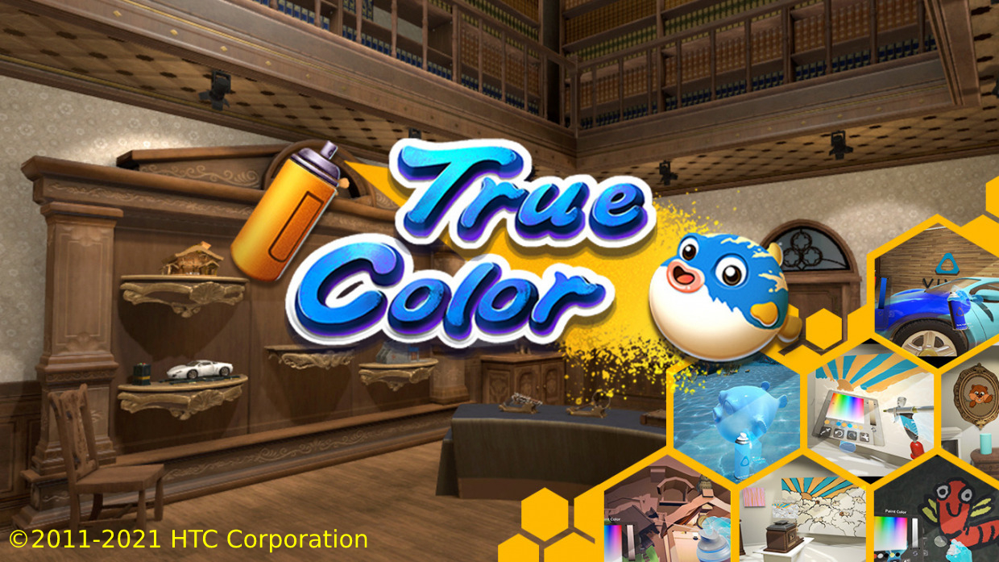
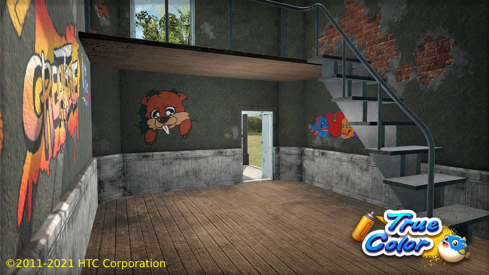
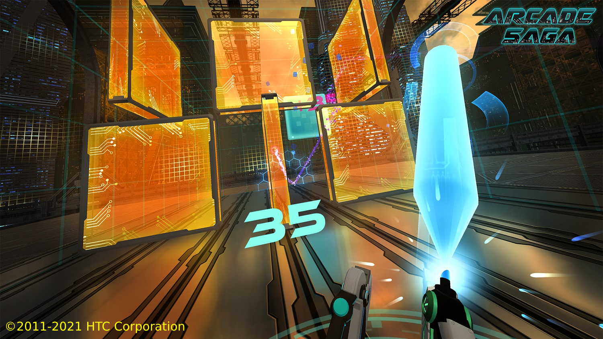
Extended Reality
Related works:
- Inception: Virtual Studio System for Film Production, © 2019 Toppano
- TrueColor, © 2011-2021 HTC Corporation
- Arcade Saga, © 2011-2021 HTC Corporation
- Electronic device, method for displaying an augmented reality scene and non-transitory computer-readable medium, ROC Patent No. I711966
- Virtual reality device, image processing method, and non-transitory computer-readable medium, ROC Patent No. I684163
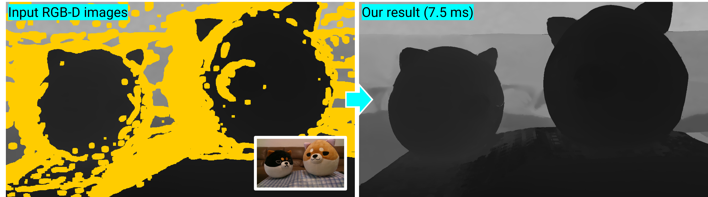
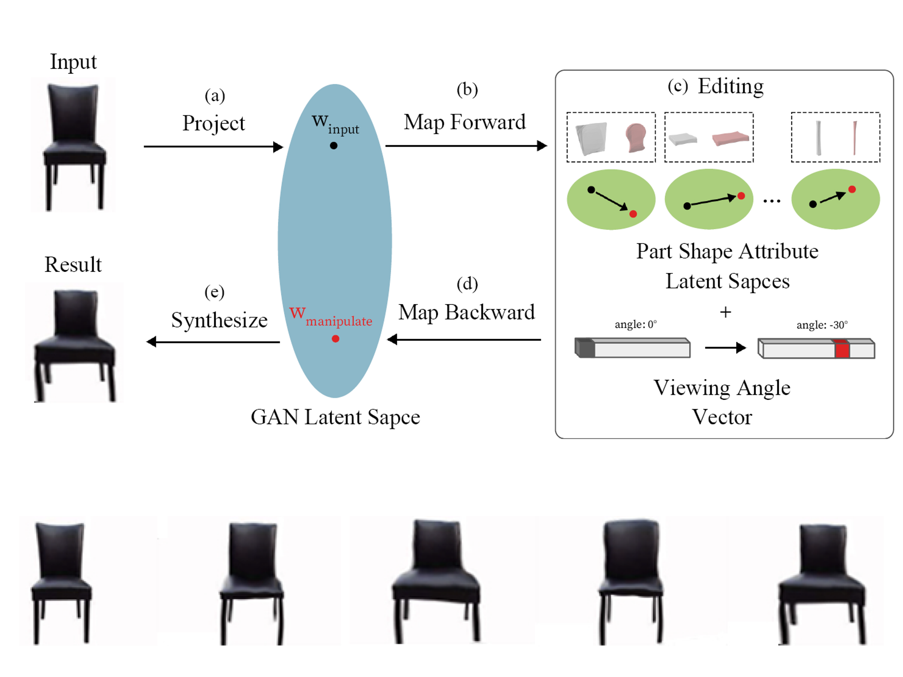
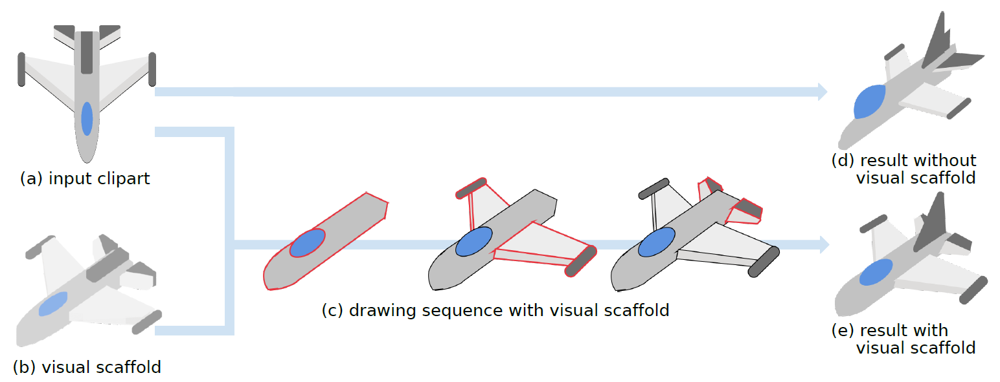
Image Enhancement and Intuitive Editing
Related works:
- StylePart: Image-based Shape Part Manipulation, arXiv 2021
- Multi-Resolution Shared Representative Filtering for Real-Time Depth Completion, HPG 2021
- ClipFlip: Multi-view Clipart Design, CGF 2021